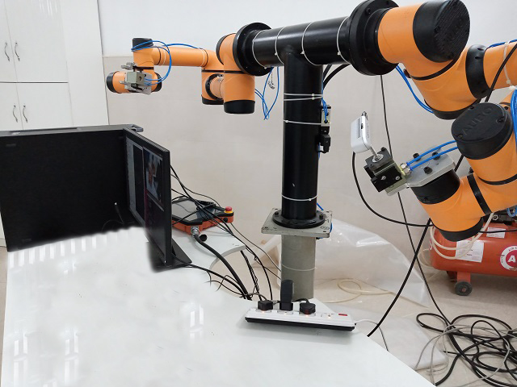

This week I started with some research on the various applications of bin-picking in the industry nowadays and continue reading other academic papers on the different processes utilized to segment the Data acquired by the RGB_D sensors. I also studied some algorithms utilized for object detection from Open CV Library and for filtering point clouds from the Point Cloud Library.
Apart from this, these week was specially marked by some developments on the Installation of the hardware and acquisition and processing of data.
RealsenseIn order to decide the correct position to install the Realsense, I tried some frames for the different possible positions of the camera sensor on the robot, and then finalised the position for the camera sensor to be attached.
Final Position Installed - Realsense with 6 Degrees of freedom.

Afterwards I began to segment the sensor data, for the detection of a simple object, a box. Then created a launch file to run all the necessary programs for the visualization of the results. I started by eliminating parts of the non featured points, in order to simplify and keep only the points that represent the objects. The algorithm and filters used where the following:
- SIFT (Scale Invarient Feature Transform) :- sift.detect() function finds the keypoint in the images. You can pass a mask if you want to search only a part of image. Each keypoint is a special structure which has many attributes like its (x,y) coordinates, size of the meaningful neighbourhood, angle which specifies its orientation, response that specifies strength of keypoints etc.
- FLANN Matcher :- FLANN stands for Fast Library for Approximate Nearest Neighbors. It contains a collection of algorithms optimized for fast nearest neighbor search in large datasets and for high dimensional features. For FLANN based matcher, we need to pass two dictionaries which specifies the algorithm to be used, its related parameters etc.
- spatFilter :- Filters A Set Of Points Based On A Probability Map. This function rarefies a set of points using a raster map of probabilities of a point persisting in that location.
- temp_filter
- Alpha beta filter